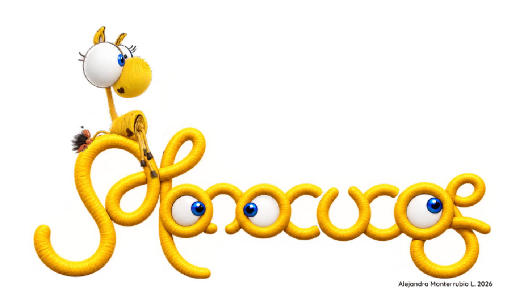
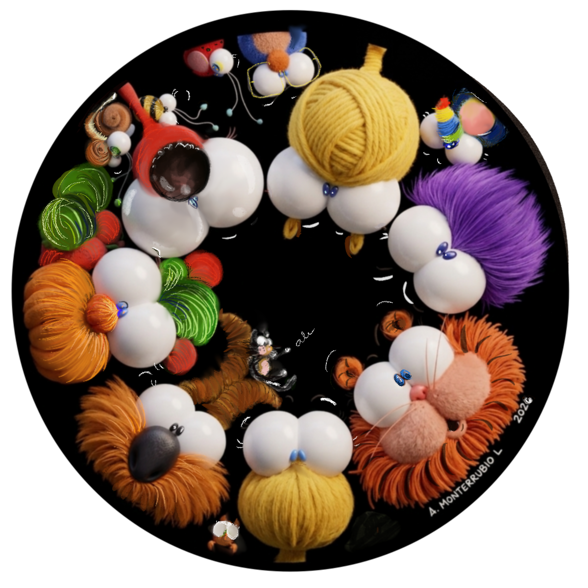

INCLUSIÓN · AUTOACEPTACIÓN · PERTENENCIA
Diferencia en la Apariencia
Aceptar la diversidad y acompañar a quienes pueden sentirse excluidos.

ENTRARUN UNIVERSO PARA CRECER JUNTOS
Una comunidad de personajes, historias y experiencias que ayudan a los niños a descubrirse, comprender a los demás y aprender a vivir juntos.

LA MAGIA DE LOS MONOCUCOS
MONOCUCOS es una comunidad vibrante de personajes de todas las edades que acompaña a los niños en el aprendizaje emocional y social.
A través de historias, imaginación y experiencias, abre conversaciones sobre aquello que nos hace diferentes, aquello que sentimos y aquello que podemos hacer por los demás.
HISTORIAS
Cada historia abre una conversación.
Aceptar la diversidad y acompañar a quienes pueden sentirse excluidos.

Descubrir talentos únicos y comprender que nuestras acciones pueden transformar nuestro entorno.

Una historia sobre los desafíos de adaptarse a nuevos entornos y diferencias culturales.

PERSONAJES
Una comunidad donde todos tienen algo que aportar.
No todos somos iguales. Y eso es precisamente lo que hace especial a nuestra comunidad.
APRENDER MONOCUQUEANDO
Las diferencias nos hacen únicos.
Cada persona tiene una historia.
Todas las emociones tienen algo que decirnos.
Nadie debería sentirse solo.
Cada día podemos descubrir algo nuevo de nosotros mismos.
IMPACTO
MONOCUCOS lleva sus personajes, historias y herramientas a diferentes contextos para trabajar con niños, familias, educadores e instituciones.
MONOCUCOS EN LOS TERRITORIOS
Una plataforma para llevar la magia de MONOCUCOS a escuelas, comunidades, hospitales, instituciones y territorios.
CONOCE EL PROYECTO
MONOCUCOS
Un mundo para todos, donde todos somos uno.
HABLEMOS